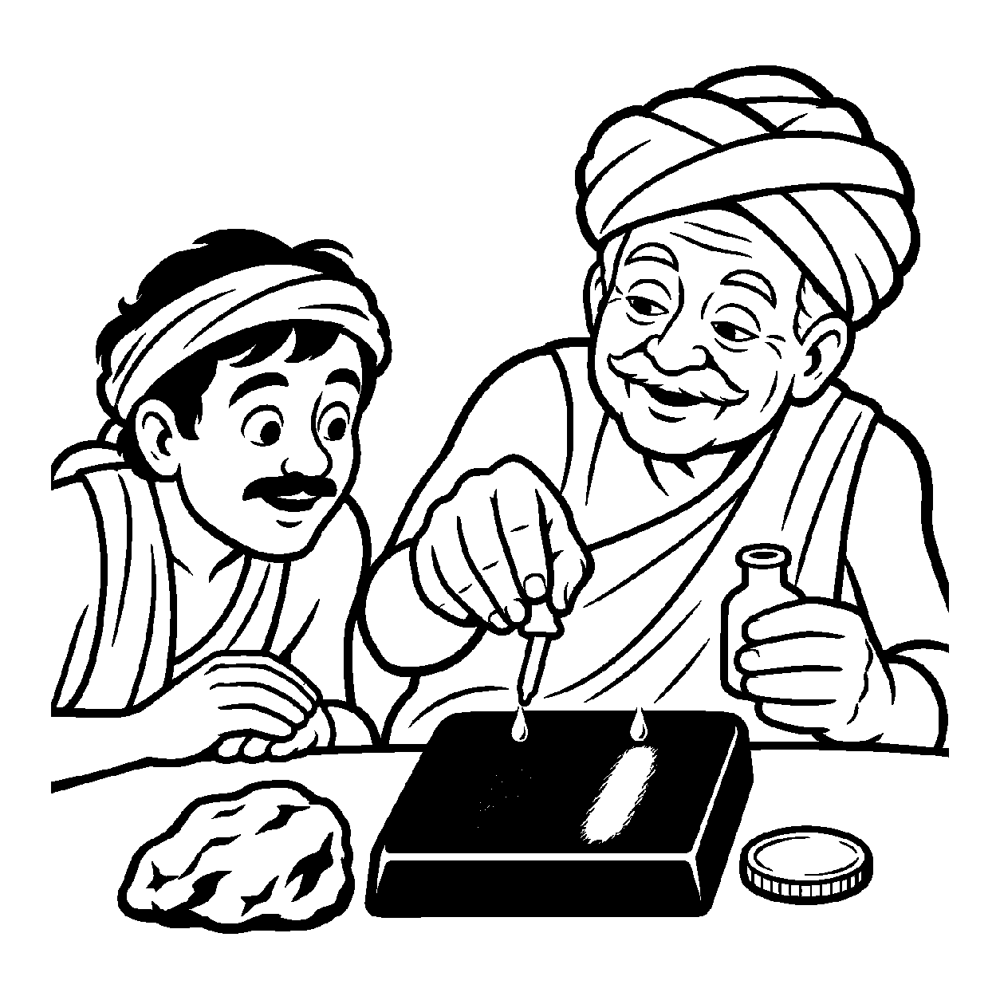

ઝવેરીના બજારમાં એક કારીગરે તાંબું અને જસત મેળવીને બનાવેલું પિત્તળનું કડું એવું ઘસીને ચમકાવ્યું છે કે તે સોના જેવું જ પીળું અને ચળકતું દેખાય છે. એક સામાન્ય ગ્રાહક તેને જોઈને ઉદ્ગાર કાઢે છે: "આ કડું તો સાક્ષાત્ શુદ્ધ સોનું જ છે!" વાસ્તવમાં પિત્તળ એ સોના જેવું દેખાતું સદૃશ (સમાન) ધાતુ છે, અસલ સોનું નથી; છતાં સોના જેવા રંગ અને ચમકરૂપી સદૃશ કારણને લીધે પિત્તળ પર સોનાનો વ્યવહાર કરવો તે લોકરૂઢિ છે. તેવી જ રીતે સંસારી જીવમાં જ્યારે કર્મોદયજનિત રાગ, દ્વેષ, મોહ કે ક્રોધ જેવા વિભાવિક વિકારો પ્રગટે છે, ત્યારે તે વિકારો પણ ચેતનાના જ્ઞાન-દર્શન જેવા પરિણામો સાથે ભળીને ચેતન જેવા ભાસે છે. આથી શાસ્ત્ર અને લોકમાં વ્યવહારથી કહેવાય છે: "આ કર્મોદયજનિત વિકાર પણ જીવ માટે સર્વથા સ્વાભાવિક અને શક્ય છે, આ જ જીવનો વર્તમાન સ્વભાવ છે." અહીં અસલ સ્વભાવ જેવા દેખાતા સદૃશ કારણમાં તે જ કાર્યનો ઔપચારિક આરોપ કરવો તેને 'તત્સદૃશકારણે તદુપચારક વ્યવહાર' કહેવાય છે.
પરમાર્થ દ્રષ્ટિએ આત્માનો ત્રિકાળી સ્વભાવ સદા નિર્વિકાર અને જ્ઞાનમય છે. રાગ-દ્વેષ એ કર્મજનિત આગંતુક મિલિનતા છે. પરંતુ સંસારી અવસ્થામાં કર્મનો ઉદય એટલો પ્રબળ હોય છે કે જીવ રાગ-દ્વેષમાં તન્મય થઈને તેને જ પોતાનો આત્મા માની બેસે છે. વ્યવહાર નય સંસારની પરિસ્થિતિનું યથાર્થ નિરૂપણ કરવા માટે આ સદૃશ કારણોને સ્વીકારે છે. જ્યાં સુધી સાધક આ વિભાવિક સદૃશતાને ઓળખતો નથી, ત્યાં સુધી તે શુદ્ધ સ્વભાવ તરફ વળી શકતો નથી.
આ નય સાધકને જાગૃત કરે છે કે રાગ-દ્વેષની ક્ષણિક પરિણતિ ભલે આત્મસ્વભાવ જેવી ભાસે, પણ તે સાચો સ્વભાવ નથી; સાચો સ્વભાવ તો પરમ વીતરાગતા જ છે.
પિત્તળ પીળું સોના સમું, સોનું કહે સંસાર;
સદૃશ કારણ ભાળીને, ચાલે જગ વ્યવહાર.
રાગ દ્વેષ વિભાવ છે, આતમ જ્યોતિ અરૂપ;
સાદૃશ્ય ભ્રમ ઓગળતાં, લહે સ્વભાવ અનૂપ.
સાધકને જાગૃત કરે છે કે રાગ-દ્વેષની ક્ષણિક પરિણતિ ભલે આત્મસ્વભાવ જેવી ભાસે, પણ તે સાચો સ્વભાવ નથી; સાચો સ્વભાવ તો પરમ વીતરાગતા જ છે.

ધર્મપુરી નગરમાં ગોપાલ નામના એક ગરીબ માણસને ખેતરમાંથી ખોદતાં એક જૂનો, પીળો અને ચમકતો ધાતુનો ગઠ્ઠો મળ્યો. ગોપાલે તેને ઘસી જોયો. તે સોના જેવો જ ચમકતો હતો. ગોપાલ ખુશ થઈને નાચવા લાગ્યો: "મને સાક્ષાત્ સોનાનો ખજાનો મળ્યો છે! હવે હું નગરનો સૌથી મોટો ધનવાન બની ગયો છું!" તે સોનાની લાલચમાં રાત-દિવસ તે પથ્થરને છાતીએ લગાવીને સૂતો. પરંતુ જ્યારે તે બજારમાં તે ગઠ્ઠો લઈને અનાજ ખરીદવા ગયો, ત્યારે દુકાનદારે કહ્યું: "આ તો સાદું પિત્તળ છે, આનાથી અનાજ નહીં મળે!" ગોપાલ રડવા લાગ્યો: "જો આ સોના જેવું જ ચમકે છે, તો પછી સોનું કેમ નથી?" તે સદૃશતા અને અસલિયત વચ્ચે ગૂંચવાઈ ગયો.
તે સમયે નગરના એક અનુભવી વૃદ્ધ ઝવેરી ત્યાં આવ્યા. તેમણે ગોપાલને પાસે બેસાડીને કસોટીના કાળા પથ્થર પર તે ગઠ્ઠો ઘસ્યો અને સોનાનો એક અસલ સિક્કો પણ ઘસ્યો. બંને પર એસિડનું એક ટીપું મૂક્યું. પિત્તળનો લીટો ક્ષણવારમાં ભૂંસાઈને કાળો પડી ગયો, જ્યારે સોનાનો લીટો સૂર્યની જેમ ચમકતો રહ્યો! ઝવેરીએ કહ્યું: "ગોપાલ! તત્સદૃશકારણે તદુપચારક વ્યવહારને સમજ! આ પિત્તળનો રંગ સોના જેવો જ પીળો હતો, તેથી તું ભ્રમણામાં પડીને તેને 'સોનું' કહેતો હતો. સંસારમાં સમાન દેખાતા કારણોમાં મૂળ વસ્તુનો ઉપચાર સહજ છે. પરંતુ કસોટી થતાં જ નકલી રંગ ઊડી જાય છે અને અસલિયત પ્રગટે છે! તેમ જ તારા મનમાં ઊઠતા રાગ-દ્વેષ પણ ચેતના જેવા ભાસે છે, પણ તે આત્માનું અસલ સોનું નથી; આત્માનું અસલ સોનું તો સમતા અને શાંતિ છે." ગોપાલની ભ્રાંતિ ઓગળી ગઈ. નકલી પિત્તળનો મોહ છૂટી જતાં તેનું મન શાંત થયું અને તે અંતરના પરમ વિશ્રામમાં ઠરી ગયો.
જો જીવ સદૃશ ભાસતા વિભાવિક વિકારોને જ પોતાનો કાયમી સ્વભાવ માની લે, તો તે સુધરવાનો પ્રયાસ જ છોડી દઈ પાપમાં ખૂંપેલો રહે છે.
આ નય વર્તમાન વિકારની શક્યતા સ્વીકારીને પણ શુદ્ધ કુંદન જેવા અસલ સ્વભાવની ખોજ કરાવે છે, જેથી જીવ હું-પણાને ખોઈને પોતાના આત્મસ્વરૂપમાં સ્થિર થાય છે.